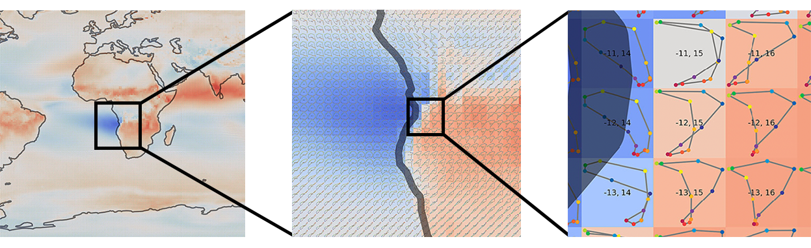

Zoom in to see the individual OLR loops for each location.
Each loop is labelled with it's coordinates in the form [ latitude, longitude ] and each month is coloured according to the legend at the bottom of the screen.
Note: this viewer has been deigned for, and works best on, Google Chrome.